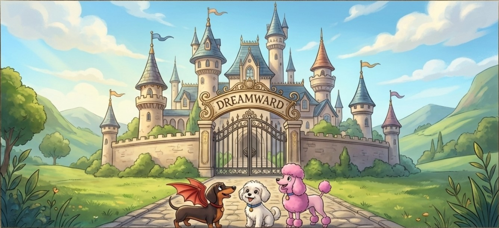

Тут магія починається з бажання знати.
Щоб стати справжнім СилаВолієм, потрібно вчитися! Разом із Луною, нашим Розумом, ми вивчаємо найважливіші предмети: Заклинання Радості, Зілля Зоряного Сяйва та Мову Дружби.
Реагує на щирі емоції. Чим сильніше ти віриш у себе, тим потужніша твоя магія. Цей артефакт вчить нас самодовірі.
ПЕРЕВІР СВОЮ ВІРУЛегендарна книга, що містить всю магію світу і реагує на допитливість. Вона розкриває свої сторінки лише тим, хто справді прагне знати.
СПРОБУЙ ЗНАЙТИ ВІДПОВІДЬВтілює думки в реальність, навчаючи відповідальності за свої бажання. Що намалюєш, те й збудеться!
НАМАЛЮЙ СВІЙ НАСТРІЙОбирай урок, який допоможе тобі стати ще могутнішим!
Навчися знаходити позитив у маленьких речах і створювати потужні Заклинання Сміху.
ПОЧАТИ УРОКНавчись слухати, розуміти та вирішувати конфлікти за допомогою мудрості та емпатії.
ПОЧАТИ УРОКІспит на силу слів! Використовуй тільки добрі та чесні слова, щоб створити найпотужнішу магію, адже НаноПут ненавидить щирість!
Нагорода: Диплом Справжнього СилаВолія та доступ до ексклюзивних історій!
СТАТИ СИЛАВОЛІЄМ (Пройти Тест)